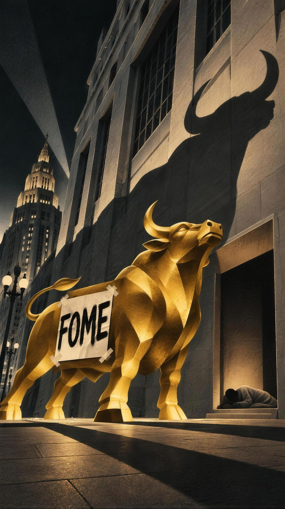

Dossiê autoral · novembro de 2026Por Alma
A engenharia
do golpe
Como os bilionários transformam
uma derrota nas urnas em lucro.
E como a gente dá o troco.
Ilustração feita com IA. Referência: os cartazes de FOME colados no touro da B3 em 2021.
@alma.prazerFato tem fonte. Leitura é opinião.29 páginas